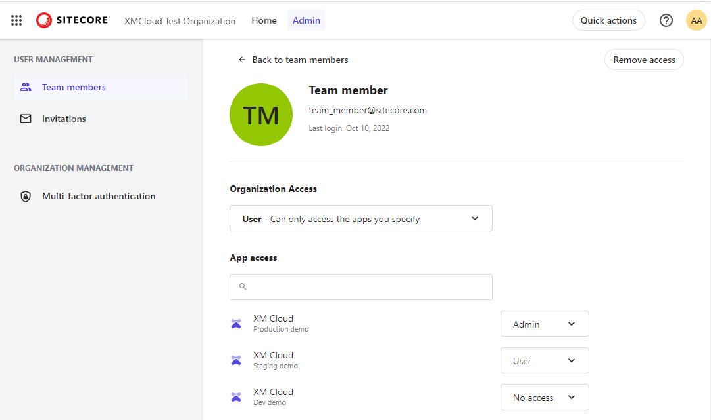

Manage the access of a team member
Describes how to change or remove the access of a team member.
In the Sitecore Cloud Portal, a team member with an Organization Admin or Organization Owner role can change the organization and app access of other team members.
A team member is anyone that is a part of the organization. A team member's organization role and app roles determine the apps they can open and the work they can perform. For information about the different types of team members, see roles.
A team member's organization role determines if they can invite others to the organization, assign roles, and perform other admin tasks. People with the Organization Owner or Organization Admin role automatically have the highest role in all apps in the organization.
To update the organization role of a team member:
In the Sitecore Cloud Portal, on the menu bar, click Admin.
On the Team members page, for the team member that you want to update access for, click the Actions menu
 and then click View details.
and then click View details.On the Details page, in the Organization access drop-down menu, click the level of access that you want this member to have.
App roles determine which apps a team member can access and their role in each app. Each Sitecore product has a unique set of app roles.
Organization Owners and Organization Admins can modify a team member's access to certain apps by updating their app role.
Note
The app access list is only visible when the team member has an Organization User role. A team member with an Organization Admin or Organization Owner role has an Admin role in all apps in the organization.
To update the app access of a team member:
In the Sitecore Cloud Portal, on the menu bar, click Admin.
On the Team members page, for the team member that you want to update access for, click the Actions menu
and then click View details.On the Details page, in the App access list, locate the app that you want to change access for.
In the drop-down menu of the app, click the app role that you want this member to have.

Organization Owners and Organization Admins can remove the access of a team member, permanently deleting them from the organization.
To remove access:
In the Sitecore Cloud Portal, on the menu bar, click Admin.
On the Team members page, for the team member that you want to remove, click the Actions menu
and then click Remove access.In the Remove access dialog box, click Remove.